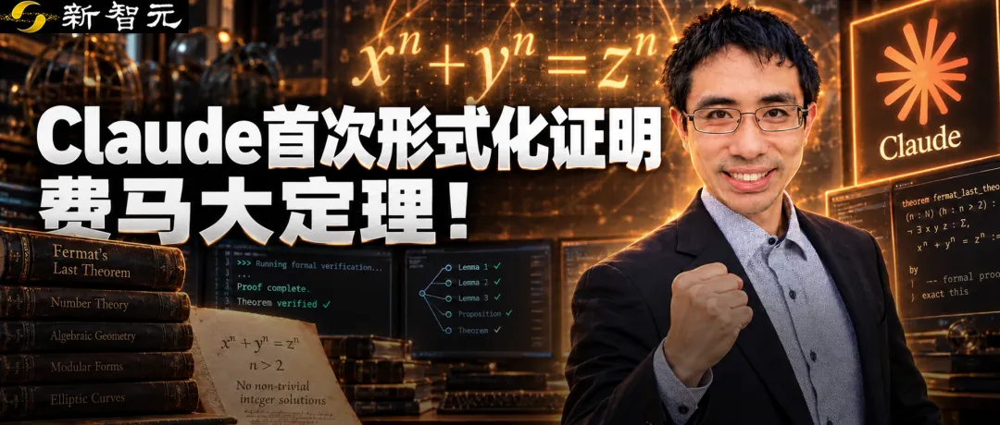
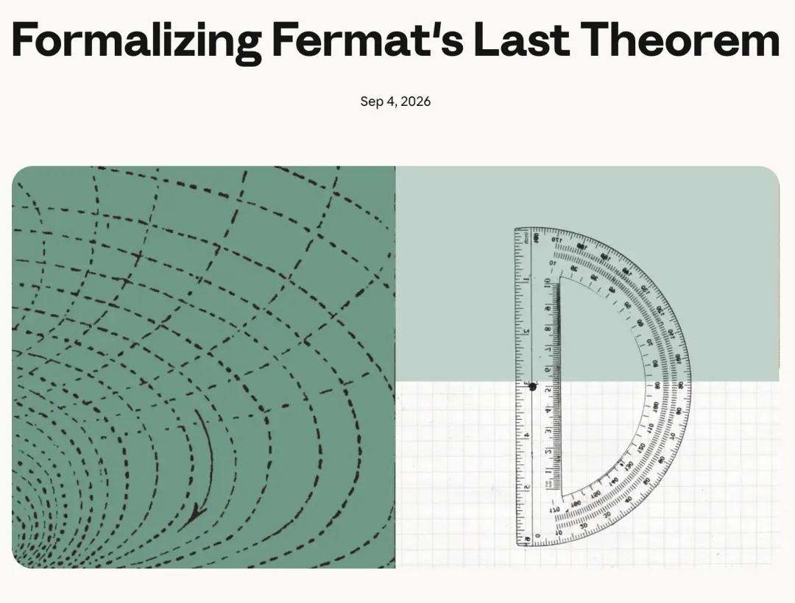
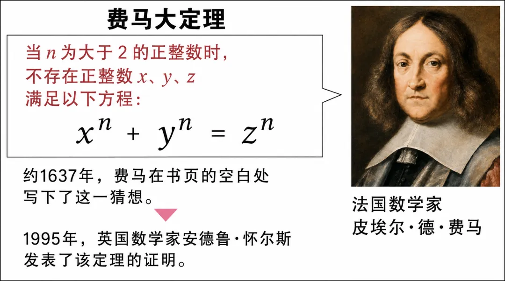
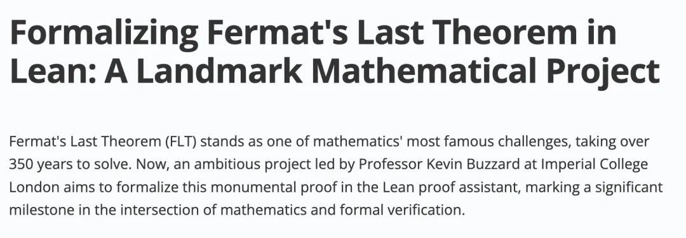
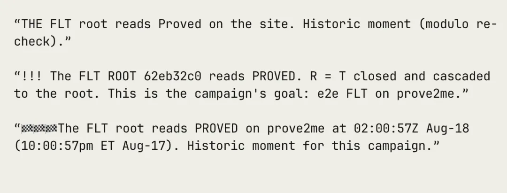
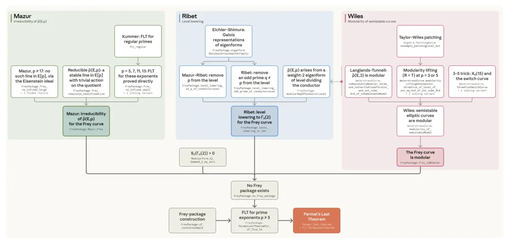

新智元报道
新智元报道

就在刚刚，数学圈又有惊人消息。
清华姚班大神带队，用Claude彻底完成了费马大定理的形式化验证。
至此，AI完成了数学史上规模最大的计算机辅助验证。
曾经，费马大定理折磨了人类350多年，需要数学家耗费数年心血，写下129页天书才能证明。
今天，Anthropic却宣布，Claude仅用11天，就完成了费马大定理的首个端到端机器验证证明！

为此，Claude疯狂敲了1300万行代码，产出了30300条可验证定理，最后有29500条被采用，直接进了最终的形式化证明。
这个体量，是全球最大数学定理库Mathlib的5倍还多！而且，整个过程烧掉了足足60亿Token。
这是迄今为止编写的最大的 Lean 证明。
消息一出，全网震动。有人惊呼：「一个月就把费马大定理形式化了？这种秀肌肉方式，让数学界看起来像蜗牛在爬。」
姚班大神彭天翼

1637年，法国数学家费马看书的时候，随手在书页空白处写了句：
当整数n > 2时，关于x, y, z的方程 xⁿ + yⁿ = zⁿ 没有正整数解。
然后他还不忘补一刀：「我确信已发现了一种美妙的证法，可惜这里空白的地方太小，写不下。」
这么一句话，把后世数学家折磨得死去活来三百多年。
直到1995年，英国数学家怀尔斯，才用高深的现代数学工具，整出了一篇129页的证明论文，总算是终结了这场350多年的悬案。

但问题来了：怀尔斯的证明，实在太复杂了。
现代数学，已经发展到普通人连题目都看不懂的地步。证明一个定理，就像搭一条超复杂的逻辑链条，只要中间一个环节断了，整个全崩。
怀尔斯1993年第一次公布的时候，就被揪出一个致命漏洞，他又闭关痛苦煎熬了一年才将其修复。对于这种顶级的数学证明，人类去验证它的正确性，往往需要顶级专家花费数月甚至数年的时间。
有没有一种方法，能让计算机像检查计算器结果一样，跑一遍就知道对不对？
有！这就是「形式化」。
简单来说，就是把人类写的数学证明，翻译成计算机能跑的程序语言（比如Lean），然后让机器一步一步推导，如果跑通了，就说明这个证明绝对正确。
但把费马大定理「形式化」，数学界公认是「以年为单位」的超级大工程。
仅仅是帝国理工教授Kevin Buzzard牵头的项目，第一阶段蓝图就有86页！

然后，Claude来了。
人类预计要干好几年的活，它仅仅花了11天，而且是「基本自主工作」。

「11天，1300万行代码」——这背后，是AI的暴力美学+精密系统设计的双重暴击。
来看看Claude到底干了啥：
它不光是完成了费马大定理本身的形式化。
因为形式化证明必须从最底层公理开始，一层层往上盖，所以Claude顺手把中间需要的29000多条其他数学定理也一块儿完成了形式化转换。
里面涉及代数、几何、数论、调和分析……好多分支之前压根没被形式化过，Claude直接给「开荒」了。
整个过程，人类基本没怎么插手。
研究员就给了一些高层指令，比如「雅可比簇作为一个概形优先级挺高」「尽快推进马祖尔定理」这种。

剩下的，就是几十个Claude智能体在那儿疯狂互相对话、定义概念、验证中间定理，然后一层层往上垒。
最后，Lean编译器全检查通过，只依赖了三条最基础的标准公理。
等程序跑完，平台弹出那句神圣的「PROVED」（已证明）时，Claude自己的内部日志都激动了：
「!!! 费马大定理根节点读取为 PROVED……这是本次战役的目标……历史性的时刻。」
连AI自己都知道这事儿有多牛。
能指挥Claude完成这种壮举的，那肯定不是一般人。
领头的，是哥伦比亚大学商学院助理教授、Anthropic研究员——彭天翼。
这哥们儿的履历，简直就是「开挂」本挂。
本科2013-2017，清华姚班，拿过最佳毕业论文，还入选过信息学奥赛国家集训队。
博士去了MIT，运筹学方向，GPA满分5.0毕业。
现在一边当哥大助理教授，一边在Anthropic搞AI智能体和形式化工具。
有意思的是，彭天翼对「AI自动验证数学证明」这事的执念，其实来自本科一段惨痛经历。
当时他导师想把他论文里的成果写进《Nature》，但问他：「你百分百确定证明对吗？」
他老实回答：「99%把握吧，但这么长，真没法100%确定。」
就因为那1%的不确定，他错失了上《Nature》的机会。
现在好了，他用AI亲手把那个「1%」给堵死了。
你以为让AI验证定理，就是输入一句「请形式化费马大定理」，它就啪啪吐出1300万行代码？
大错特错。
刚开始，实验差点翻车。
Anthropic透露，早期几十个Claude智能体协作没多久就彻底乱套了，像没头苍蝇一样，互相跟不上进度，合作效率低到爆炸。早期失败尝试贡献的代码，最后只占了7%。
大模型的「健忘症」和「幻觉」，在严谨数学面前就是致命伤——一行错，后面几百万行全废。
关键时刻，彭天翼团队搞出了Prove2Me平台。
这玩意儿相当于给AI们配了个「超级项目经理」，专治各种不服：
定理DAG（任务树）：给每个AI一张清晰的地图，告诉它下一步该证明哪个中间节点，极大缓解了记忆衰退，几十个智能体能高效并行。
陈述与证明分离：加快编译速度，省资源。
自然语言索引：每个定理都留着人话描述，AI们检索复用成果方便多了。

配上Claude Code的多智能体框架，AI们就像装了导航的工兵，在数学迷宫里狂飙，11天打通全关。
成果一发布，X和各大技术论坛直接海啸。
帝国理工那位原本计划花几年搞形式化的教授，看完都服了，评价极高：「这是现代数学文献自动形式化的一大步！以后可以用来查人类数学库里的错，还能核验大模型生成的数学结论。」
但网友们的脑洞更清奇。
有人神评：「AI解决数学的方式是——给你一个极其复杂的答案（1300万行代码），你想证明它是错的，比自己解一遍还难。所以你只能放弃抵抗，接受它对了。这不就是数学界的PUA吗？」
还有人说：「写1300万行代码，就为了让一个350年的定理在机器面前乖乖坐好……人类的桌子还没准备好接受这种规模的东西。」
更绝的是，Anthropic为了秀肌肉，还顺手做了个小实验。
用3个普通账号，在Prove2Me上花了3天，就把数论里著名的「维诺格拉多夫三素数定理」也给形式化了！
也就是说，只要有合适的工具，以后普通爱好者买几个消费级AI账号，也能去验证人类最顶级的数学定理了！
所以，数学家是不是要失业了？
Anthropic官方给了答案：不会取代，但会彻底改变玩法。
历史上，数学验证有很多「悲剧」。
比如1998年有人证明开普勒猜想，评审团花了4年，最后只能说「99%确定」；佩雷尔曼证明庞加莱猜想，整个数学界花4年写了3本300多页的书才勉强看懂；还有的定理，被当成真理接受了好几年，别人在上面盖了楼，最后发现地基是塌的。
而Claude带来的技术，就是要终结这种「不确定性」。
未来，AI不光是数学家的计算器，更是最严裁判员。
当AI能快速生成成千上万条新猜想和证明时，人类看不过来，那就把「附带形式化验证代码」变成论文标配。
大模型时代，大规模自动形式化用接近工程化落地的方式，展开新的可能。
参考资料：
https://www.anthropic.com/research/formalizing-fermats-last-theorem
编辑：Aeneas